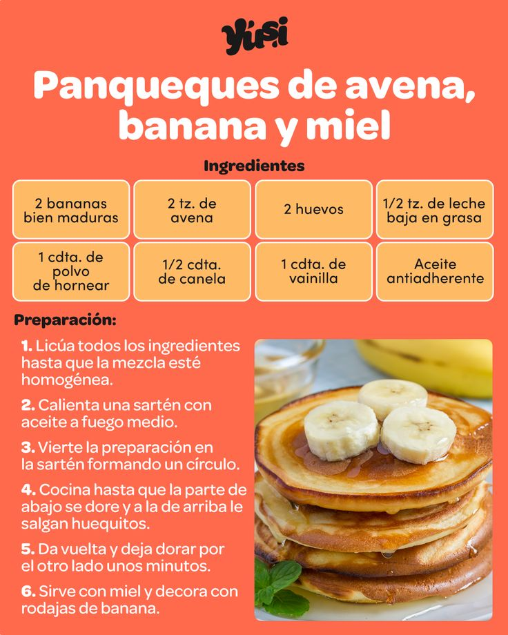

Panqueques de avena, banana y miel
Realizado por Nicolás Hernández y Matías Cabaleiro
Ingredientes
- 2 bananas bien maduras
- 2 tazas de avena
- 2 huevos
- 1/2 taza de leche baja en grasa
- 1 cucharadita de polvo de hornear
- 1/2 cucharadita de canela
- 1 cucharadita de vainilla
- Aceite antiadherente
Preparación
- Licúa todos los ingredientes hasta que la mezcla esté homogénea.
- Calienta una sartén con aceite a fuego medio.
- Vierte la preparación en la sartén formando un círculo.
- Cocina hasta que la parte de abajo se dore y a la de arriba le salgan huequitos.
- Da vuelta y deja dorar por el otro lado unos minutos.
- Sirve con miel y decora con rodajas de banana.
